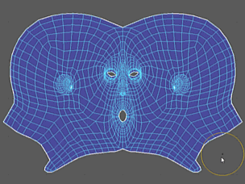

若要打开“展开 UV 工具”(Unfold UV Tool)或“优化 UV 工具”(Optimize UV Tool)，请从“UV 工具包”(UV Toolkit)中的“展开”(Unfold)部分选择它，或者从“UV 编辑器”(UV Editor)菜单中选择“工具 > 展开”(Tools > Unfold)或“工具 > 优化”(Tools > Optimize)。


“优化 UV 工具”(Optimize UV Tool)用于平均分配 UV 在网格上的间距并修复扭曲的区域（重叠 UV）。
选择“工具 > 展开”(Tools > Unfold) >  或“工具 > 优化”(Tools > Optimize) > 时，在“工具设置”(Tool Settings)窗口中将显示以下选项。
或“工具 > 优化”(Tools > Optimize) > 时，在“工具设置”(Tool Settings)窗口中将显示以下选项。
Unfold3D 笔刷选项(Unfold3DBrush Options)
- 模式(Mode)
- 在“展开”(Unfold)和“优化”(Optimize)工具之间切换。
- 笔刷大小(Brush Size)
- 设置工具的半径。
热键：按住 B 键并向左/向右拖动可调整笔刷大小。
- 笔刷压力(Brush Pressure)
- 确定工具影响曲面的程度。
热键：按住 M 键并向上/向下拖动可调整笔刷强度。
- 迭代次数(Iterations)
- 指定在展开过程完成后执行“优化”(Optimize)算法的次数（例如，值为 0 将展开网格，但不进行任何优化）。
注： 非常高的迭代次数(Iterations)可能会产生意外的结果。
- 曲面角度(Surface Angle)
- 控制曲面的强度和角度优化，从而最大限度地减少 UV 贴图中的拉伸和角度错误。默认值为 1。
注： 此选项只有在选择了“优化”(Optimize)时才可用。